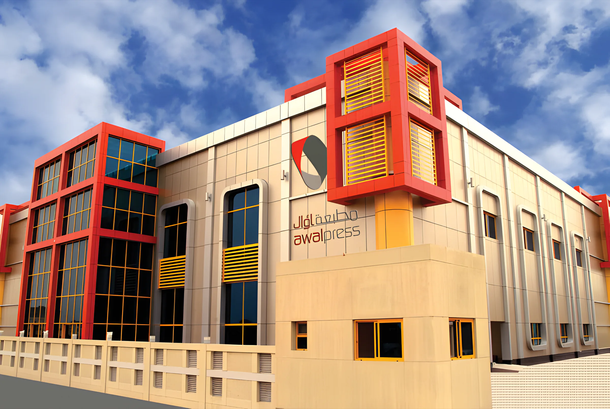

Khalid Ahmed Juman
Managing Director
Fifty years of printing in the Kingdom of Bahrain, and a new plant in Tubli built for the next fifty.

The 75,000 sq ft plant at Block 707, Tubli.
In 1958, Bahraini businessmen Ahmed Mohammed Juman and Mohammed Yousif Jalal partnered with the late Yousif Ahmed Shirawi to set up one of the first printing presses in the Kingdom of Bahrain.
They wanted to give Bahrain's growing printing and publishing trade high-quality printed work. Over fifty years, as clients' tastes and expectations changed, the press changed with them, taking on new technology in every part of the business.
Founded by Ahmed Mohammed Juman, Mohammed Yousif Jalal and the late Yousif Ahmed Shirawi.
The golden anniversary, marked by a new 75,000 sq ft plant at Tubli with the German Heidelberg workflow system and CTP. Printing capacity tripled.
An 8-colour perfecting press, new Polar programmable cutters, a new MBO combi-folder and the latest UV coating machine.
The sons of the two founding partners lead Awal Press, with Khalid Ahmed Juman as Managing Director.
From the Managing Director's letter on our Company History page.
It gives me immense pleasure to introduce the new Awal Press, with a history of 50 successful years of printing in the Kingdom of Bahrain.
With a vision to deliver high-quality visual products to the growing printing and publishing industry in Bahrain, the founders embarked on a journey which has culminated in a 50-year gradual transformation of tastes and expectations of the clients.
Today, Awal Press is led by the sons of the two founding partners, who continue to fulfill the vision of their fathers, while crafting new products based on the world's leading industry technologies.
Awal Press' promise of acquiring and adopting new technologies in every facet of our business has driven our growth. Our unique market positioning is built upon our ability to offer first-to-market and, in many cases, exclusive technologies to our esteemed clients.
In an industry where color, content, texture and visual appeal continue to become increasingly important to users, innovation, demonstrated not only through technology but also through artistic creativity, will distinguish vision from reality.
With over five decades of such success, we are excited to embark upon the journey to our centennial anniversary, meeting the challenges of new technological solutions, building on the creativities of our professional team, and delivering finished products that add a vision of color to your world.
Khalid Ahmed JumanManaging Director
Awal Press is run by a team of professionals from their own fields. Call or write to any of them directly.
Managing Director
General Manager
Client service
Accountant
Block 707, Building 100, Avenue 15, Tubli. Saturday to Thursday, 8am to 6pm.